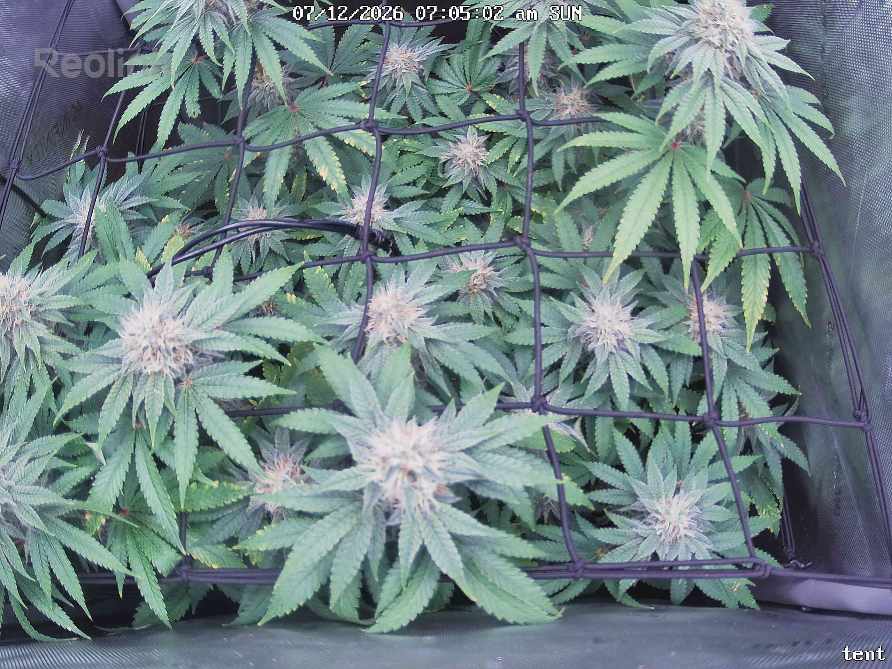
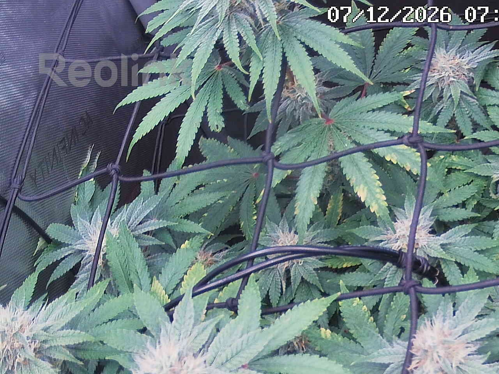
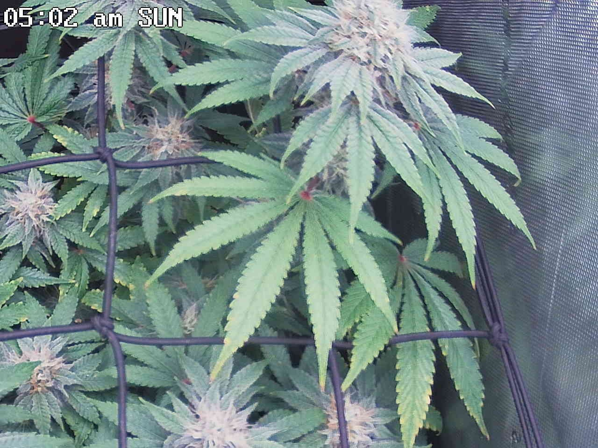
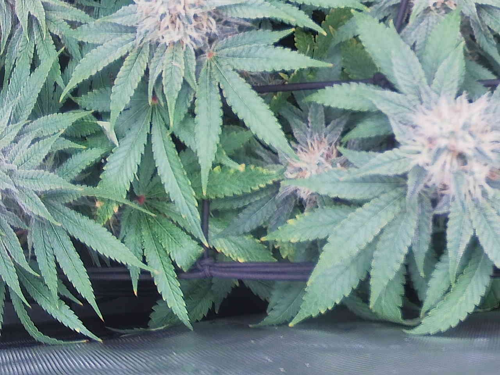
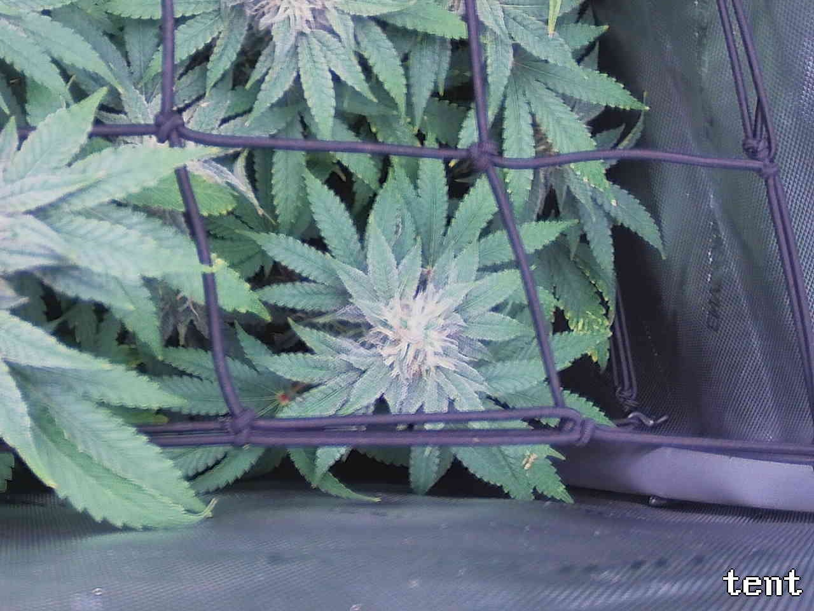
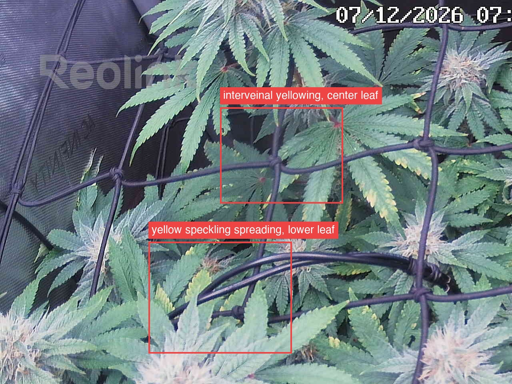
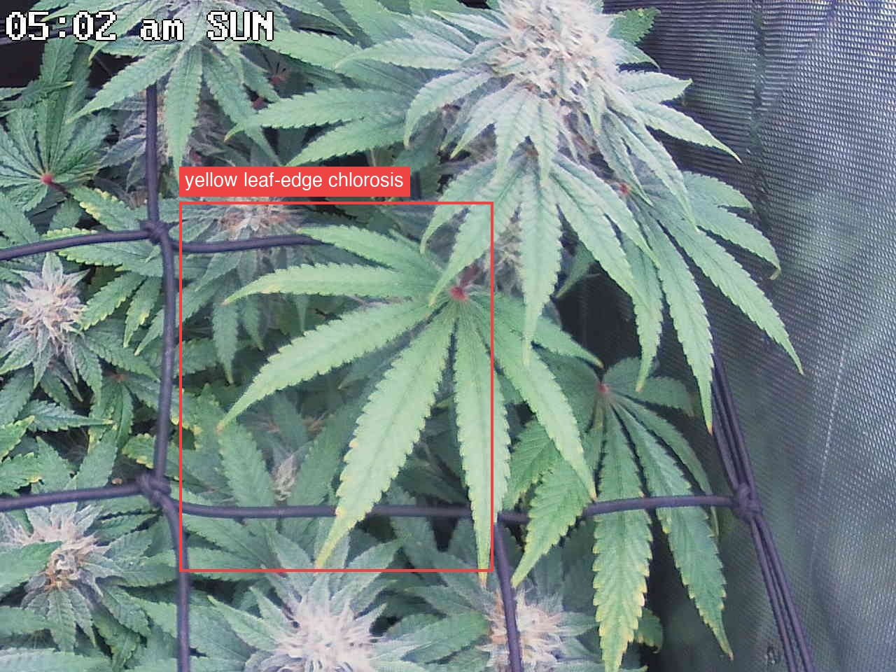

Per-quadrant analysis — the canopy shot was split into a 2x2 grid and each region compared against the previous day.
Plant is developing on-track for wk-6 bulking flower — colas are visibly fatter/frostier with amber pistils across all four quadrants versus 7/8, and no pest, mold, or hydration issues are visible anywhere. However, the interior/lower fan-leaf yellowing watch item is not stabilizing: top-left (interveinal yellowing + spreading speckling on two leaves) and top-right (margin chlorosis advancing ~two-thirds down one leaf's edge) are both flagged ATTENTION, each showing measurable day-over-day spread since 7/8 versus the tip-only/unchanged yellowing in bottom-left and bottom-right. Given the pattern spans two non-adjacent quadrants and is accelerating rather than plateauing, the single most important action is to rule out a true Mg/K deficiency (soil check, direct leaf inspection) rather than continuing to default to "normal bulking fade," even though living-soil context makes a true deficiency less likely.
Bud sites (whole plant, estimate): 12-21

Bud sites: 4-7

Bud sites: 3-5
Bud sites: 2-4